ファミリーベーシック上で過去にリリースしたゲーム
すべてシューティングゲームとなっています。 NES 形式のファイルがダウンロードできます。ファミリーベーシック上でアーケード版グラディウスのレーザーを再現
当時のプログラマは、 グラディウス（のようなもの）をよく作成しました。 グラディウス（のようなもの）を動かすことは、 その動作環境のベンチマークとしての意味合いや、 実装チャレンジの題材という意味がありました。 そのような背景のなかで、私が作成したのがこちらの作品になります。-
マイコンベーシックマガジン 1993年5月号掲載「ZACNERII」
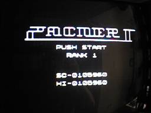
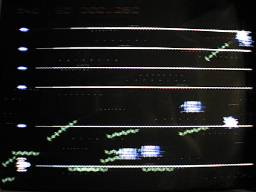
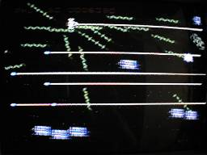
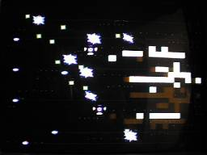
Download NES ROM image file
当時市販されていた移植版グラディウスでは、 ハードウェアの制約から様々なフィーチャーが省略されていました。 それらを再現することに重点を置いた内容となっています。
-
アーケード版相当のレーザー描画を実現
アーケード版グラディウスでは、 レーザーが画面上の端から端までとどく横一直線のラインとして描画されますが、 ファミコンはその表示に適したハードウェア機能を持ちません。 ファミコンでリリースされた市販のグラディウスシリーズでは、 市販ソフトとしてレーザーの描画をスプライト機能で行っており、 表示数制約などから、短いレーザーに置き換えられていました。
本作（ZACNERII）では、 レーザーの描画に BG 面を使うことで、画面の端までとどくレーザーを実現しました。 BG 面は 8x8 ドットのブロック単位でしか描画できないため、 任意の位置にレーザーを描画することができませんが、 4 ピクセルずらしたレーザーのキャラクタパターンを使い分けることで、 Y 方向に 4 ピクセル単位で任意の位置に描画可能にしています。 このあたりの実装は MSX 版グラディウスと同じ手法になります。
1 プレーンしかない BG 面をレーザー描画で使い切ってしまっているため、 その他のものが一切描画できない状態になってしまいました。 巨大なボスキャラは同じく BG 面に描画されるのですが、 レーザーの描画と混在はできないので、 1フレーム単位でレーザーとボスキャラを交互に表示することで、無理やり双方を表示しています。
-
アーケード版相当の 撃ち返し弾 & 時間差撃ち返し弾 を実装
アーケード版グラディウスシリーズには一貫して「撃ち返し弾」というフィーチャーがありました。 撃ち返し弾とは、敵を倒すとそれが敵弾に変化するという上級プレイヤ殺しのための仕様で、 ゲームを全ステージクリアした後に始まる高難易度の「2 周目」から発生する現象です。
ファミコンでリリースされた市販のグラディウスシリーズでは、 子供向けに難易度を低めに抑える必要があることや、 スプライト描画数の上限などのハードウェア制約から、撃ち返し弾は省略されることが通例でした。
本作（ZACNERII）では、撃ち返し弾の仕様を搭載しています。 高次周（3 周目以降）では一つの敵から複数の敵弾が発生する「時間差撃ち返し弾」も発生します。 当時ゲームセンターで稼働していた「パロディウスだ！」で ゲーマーたち（私も含まれる）を悩ませていた「時間差撃ち返し」の特訓用に作成したという経緯があります。
-
アーケード版相当のレーザー描画を実現
ファミリーベーシック上で弾幕シューティングを実装
TAITO からリリースされるシューティングゲームのうち、 良作の多くが東亜プランというメーカー製であることが明らかになり、 にわかに東亜プランブームのような状況が発生していた当時に作成したものです。-
マイコンベーシックマガジン 1990年3月号掲載「メタルさ！伊藤」
断じて「メタル斎藤」ではありません。 さらにこの作品を BOSS ラッシュ戦のように修正したものがこちらになります。
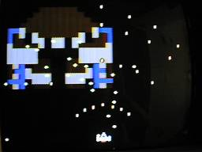
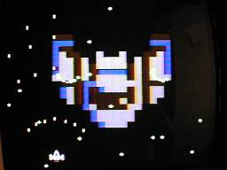
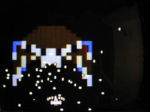
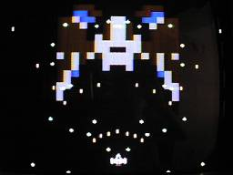
Download NES ROM image file
-
東亜シューの拡散ショットを再現
7 方向の拡散ショットを、画面上に 4 セットの合計 28 発まで発射することができます。 東亜シュー（東亜プラン製のシューティングゲーム）のような 派手な拡散ショットをバリバリ撃てるゲームは、 当時のファミコン市販ソフトでは存在しておらず、 それを実装することがコンセプトでした。
-
東亜シューのボス攻撃を再現
ファミコンのスプライトは画面上に 64 個まで表示できます。 自機と拡散ショットに 32 個使っているので、残り 32 個ですが、 これをすべて敵弾に割り当てました。
東亜シューでは敵側も拡散する弾幕で攻撃をしかけてくるのですが、 それを再現することがコンセプトでした。
-
東亜シューの拡散ショットを再現
-
マイコンベーシックマガジン 1991年7月号掲載「V.V 電電」。
こちらも、当時高難易度化が進むアーケードシューティングゲームに対抗するべく、 動体視力を鍛えるために自作したゲームです。
敵弾駆動と自機弾のシステムのみアセンブラで作成し、 それ以外の制御はすべて BASIC で作成したゲームです。 コードの修正頻度が高いゲームロジック部はアセンブラ化しないことで、 開発効率を高めることが狙いでした。
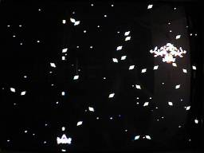
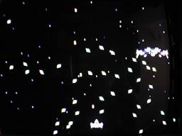
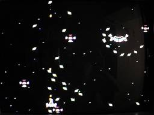
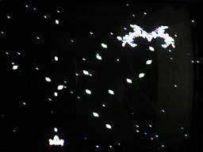
Download NES ROM image file
1998/09/14 初出
2021/02/03 全面的リライト
文責： よっしん
[戻る]